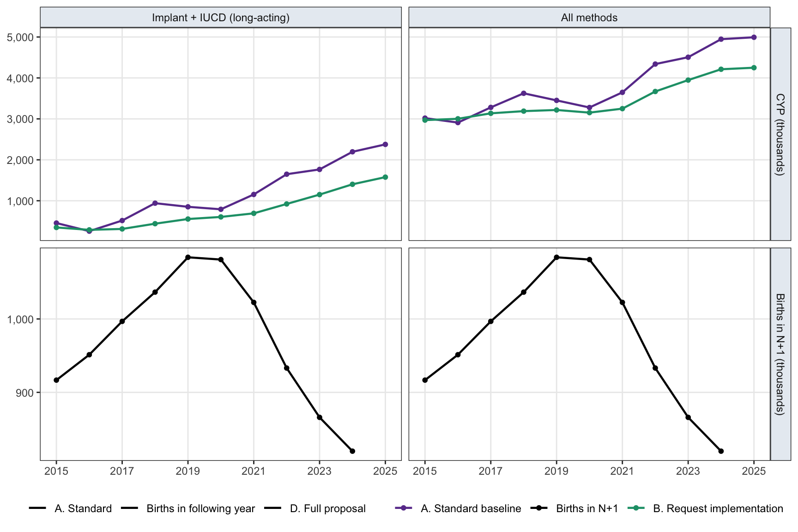
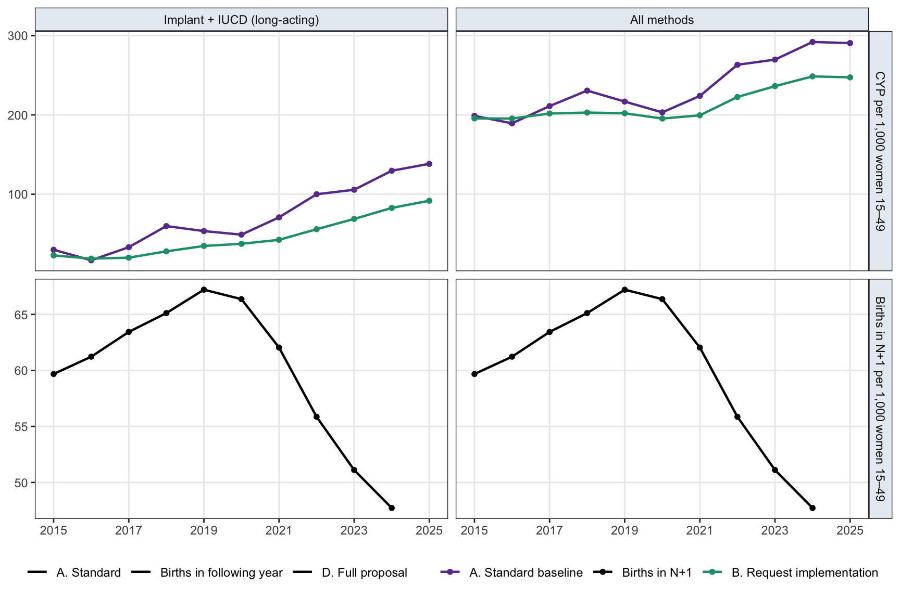
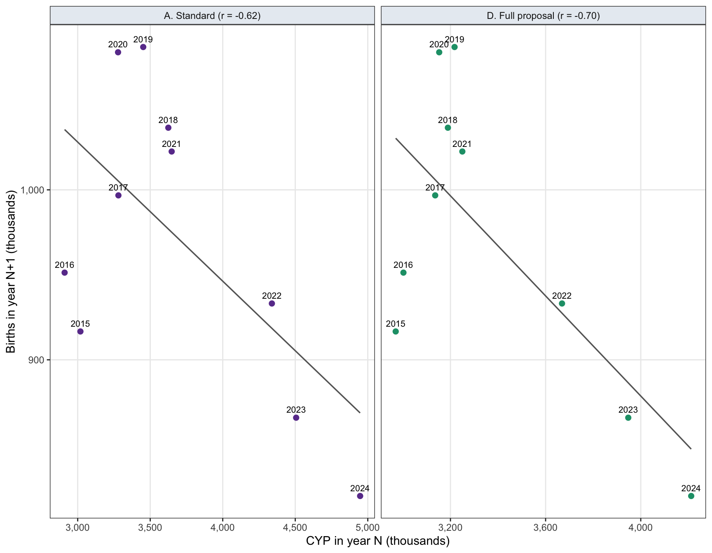
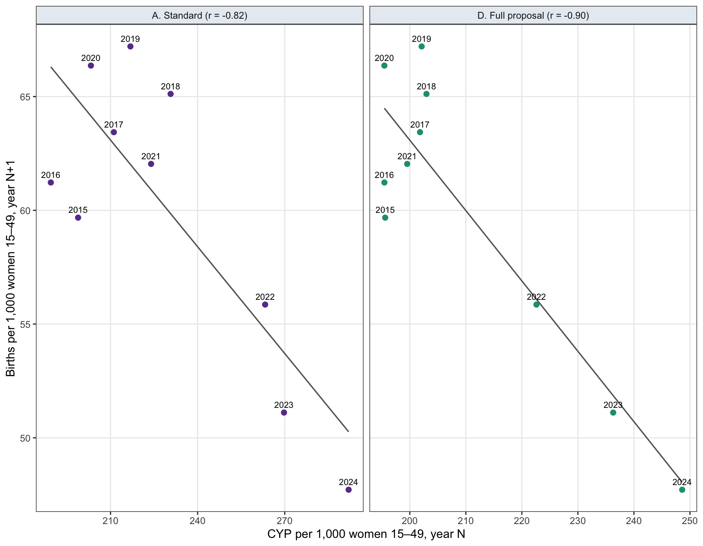
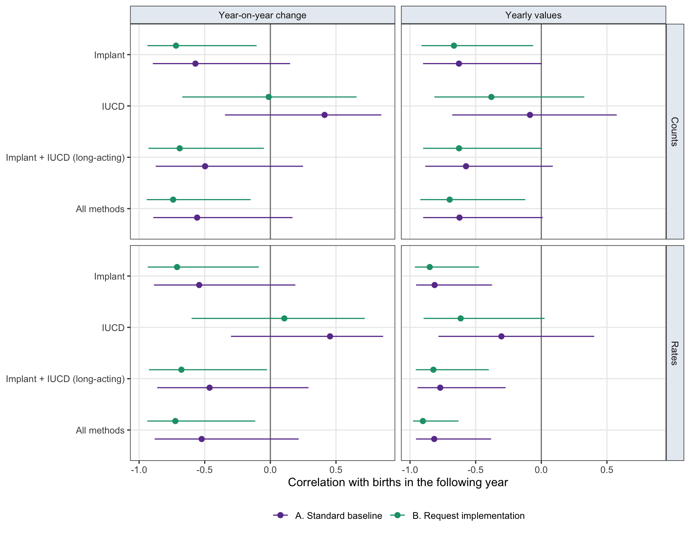

| Method | What is counted | Units in 2021 | Standard factor | Rob-request factor | Standard CYP in 2021 | Rob-request CYP in 2021 | Years of protection |
|---|---|---|---|---|---|---|---|
| Oral pill | Pill cycles | 1,200 | 1/15 | 1/12 | 80 | 100 | About 1 |
| Sub-dermal implant | Insertions | 100 | 3.5 | 2.5 | 350 | 250 | 3 |
| Copper IUCD | Insertions | 100 | 4.6 | 4.6 | 460 | 460 | 10 |
Spreading long-acting contraceptive protection across the years it works
A step-by-step walk-through with worked examples
DHIS2
contraception
CYP
methods
How standard CYP and continuation-weighted CYP are calculated, shown with implants, IUCDs and national DHIS data.
Summary
Question. Does allocating long-acting-method CYP to the years protected, rather than the insertion year, change annual programme CYP or its correlation with births?
Comparison. The baseline credits all CYP in the distribution year. Rob’s request changes the pill and implant factors and redistributes implant and IUCD protection over later years using decaying weights. Programme comparisons exclude condoms; condom CYP is shown separately.
Main findings. The request specifies redistribution and revised factors. The displayed implementation also uses an analyst-selected pre-2015 warm-up, so differences from baseline reflect all three. Correlations with next-year births are descriptive; ten annual observations cannot establish a causal relationship or validate the assumed decay weights.
Contents.
| Step | Content |
|---|---|
| 1 | Standard baseline and factors in Rob’s request |
| 2 | Weights |
| 3 | Use case A: implants |
| 4 | Use cases B (IUCD) and C (short-acting methods, sterilisation) |
| 5 | National implant data |
| 6 | Standard baseline versus Rob’s request, excluding condoms |
| 7 | Compare both CYP series with births |
| 8 | Limits and decisions |
NoteReading the grids
Each row is a group of insertions (a cohort) and each column is a calendar year. A cell is the protection that cohort gives in that year. Add down a column for that year’s CYP. Add across a row for the cohort’s total.
Step 1. Standard CYP
Standard CYP is units multiplied by a fixed factor, credited to the year of distribution.
The request specifies 12 pill cycles per CYP and 2.5 CYP per implant; the baseline uses 15 cycles and 3.5 CYP per implant. Confirm the pill product before applying 12 cycles: the methods note distinguishes combined-pill cycles from progestin-only packs.
The adjusted scenario moves implant and IUCD protection to the years it is expected to occur. The following grids make those contributions checkable.
Step 2. Weights
Adjusted CYP uses a weight per year since insertion: year 0 is the year of insertion, year 1 the next year, and so on.
| Method | Year 0 | Year 1 | Year 2 | Year 3 | Year 4 | Year 5 | Year 6 | Year 7 | Year 8 | Year 9 | Total CYP per insertion |
|---|---|---|---|---|---|---|---|---|---|---|---|
| IUCD | 0.85 | 0.75 | 0.65 | 0.55 | 0.45 | 0.40 | 0.35 | 0.25 | 0.20 | 0.15 | 4.60 |
| Sub-dermal implant | 1.00 | 0.80 | 0.70 | 2.50 |
Rules:
- The weights add up to the method’s CYP factor, so a cohort’s lifetime CYP is unchanged.
- The weights fall over time, because some women stop using the method.
- Implants and IUCDs are the only methods spread. Injectables, pills and condoms last about a year or less and are credited in the distribution year. Sterilisation is permanent but is also credited in the procedure year (see Step 4).
WarningWeights are assumptions
Rob supplied the implant weights (1.00, 0.80, 0.70) and the first two IUCD weights (0.85, 0.75). The rest of the IUCD profile is an assumed steady fall that totals 4.6. Replace them with local continuation data when available.
Step 3. Use case A: implants
Suppose 100, 120, 90 and 110 implants are inserted in 2021 to 2024, and none before or after. Each insertion gives 1.00 CYP in its own year, 0.80 the next year and 0.70 the year after.
| 2021 | 2022 | 2023 | 2024 | 2025 | 2026 | Total | |
|---|---|---|---|---|---|---|---|
| Inserted 2021 (100 units) | 100 | 80 | 70 | 250 | |||
| Inserted 2022 (120 units) | 120 | 96 | 84 | 300 | |||
| Inserted 2023 (90 units) | 90 | 72 | 63 | 225 | |||
| Inserted 2024 (110 units) | 110 | 88 | 77 | 275 | |||
| ADJUSTED CYP in the year (add down the column) | 100 | 200 | 256 | 266 | 151 | 77 | 1,050 |
| Standard baseline (3.5 CYP, credited in insertion year) | 350 | 420 | 315 | 385 | 0 | 0 | 1,470 |
| Difference: adjusted minus first standard row | -250 | -220 | -59 | -119 | 151 | 77 | -420 |
2023 column: 90 × 1.00 (2023 insertions) + 120 × 0.80 (2022 insertions, second year) + 100 × 0.70 (2021 insertions, third year) = 90 + 96 + 70 = 256 CYP.
The baseline puts 315 CYP in 2023 and nothing after 2024. Rob’s requested allocation puts 256 in 2023, 151 in 2025 and 77 in 2026. Across these cohorts, the baseline totals 1,470 CYP (3.5 per insertion); the request totals 1,050 (2.5 per insertion). The difference therefore includes both the factor change and redistribution.
Step 4. More use cases
Use case B: copper IUCD
Suppose 100 IUCDs are inserted in each of 2021, 2022 and 2023. The weights run for ten years, so protection builds up and continues well after the last insertion.
| 2021 | 2022 | 2023 | 2024 | 2025 | 2026 | 2027 | 2028 | 2029 | 2030 | 2031 | 2032 | Total | |
|---|---|---|---|---|---|---|---|---|---|---|---|---|---|
| Inserted 2021 (100 units) | 85 | 75 | 65 | 55 | 45 | 40 | 35 | 25 | 20 | 15 | 460 | ||
| Inserted 2022 (100 units) | 85 | 75 | 65 | 55 | 45 | 40 | 35 | 25 | 20 | 15 | 460 | ||
| Inserted 2023 (100 units) | 85 | 75 | 65 | 55 | 45 | 40 | 35 | 25 | 20 | 15 | 460 | ||
| ADJUSTED CYP in the year (add down the column) | 85 | 160 | 225 | 195 | 165 | 140 | 120 | 100 | 80 | 60 | 35 | 15 | 1,380 |
| Standard CYP (all credited in insertion year) | 460 | 460 | 460 | 0 | 0 | 0 | 0 | 0 | 0 | 0 | 0 | 0 | 1,380 |
| Difference: adjusted minus first standard row | -375 | -300 | -235 | 195 | 165 | 140 | 120 | 100 | 80 | 60 | 35 | 15 | 0 |
In 2023, standard CYP is 460 (the 2023 insertions only). Adjusted CYP is 100 × 0.85 + 100 × 0.75 + 100 × 0.65 = 225: the 2023 cohort is in its first year and the 2021 and 2022 cohorts are in their third and second. The remaining 910 of the 1,380 CYP falls in 2024–2032. ### Use case C: injectables, pills, condoms and sterilisation
| Method | Unit | Units in 2021 | Standard baseline CYP (2021) | Rob-request CYP (2021) | Rob-request CYP (2022 onwards) |
|---|---|---|---|---|---|
| Medroxyprogesterone (DMPA) | Injection | 1,200 | 300 | 300 | 0 |
| Norethisterone (NET-EN) | Injection | 1,200 | 200 | 200 | 0 |
| Oral pill | Cycle | 1,200 | 80 | 100 | 0 |
| Male / female condom | Condom | 12,000 | 100 | 100 | 0 |
| Sterilisation (F or M) | Procedure | 10 | 100 | 100 | 0 |
WarningSterilisation
Sterilisation is permanent and is credited 10 CYP in the procedure year, not spread. This is inconsistent with spreading implants and IUCDs and affects comparisons with births. Decide whether to spread it or report it separately.
Step 5. The real data: implants, 2015–2025
The same layout with national DHIS counts of sub-dermal implants inserted. Rows are insertion years, columns are calendar years, and figures are thousands of CYP. The requested allocation uses the pipeline’s pre-2015 warm-up.
| 2015 | 2016 | 2017 | 2018 | 2019 | 2020 | 2021 | 2022 | 2023 | 2024 | 2025 | Total in table | Falls after table | |
|---|---|---|---|---|---|---|---|---|---|---|---|---|---|
| Inserted 2013 (107,893 units) | 76 | 76 | 194 | ||||||||||
| Inserted 2014 (107,893 units) | 86 | 76 | 162 | 108 | |||||||||
| Inserted 2015 (107,893 units) | 108 | 86 | 76 | 270 | 0 | ||||||||
| Inserted 2016 (46,745 units) | 47 | 37 | 33 | 117 | 0 | ||||||||
| Inserted 2017 (104,717 units) | 105 | 84 | 73 | 262 | 0 | ||||||||
| Inserted 2018 (203,783 units) | 204 | 163 | 143 | 509 | 0 | ||||||||
| Inserted 2019 (170,578 units) | 171 | 136 | 119 | 426 | 0 | ||||||||
| Inserted 2020 (158,003 units) | 158 | 126 | 111 | 395 | 0 | ||||||||
| Inserted 2021 (262,069 units) | 262 | 210 | 183 | 655 | 0 | ||||||||
| Inserted 2022 (400,023 units) | 400 | 320 | 280 | 1,000 | 0 | ||||||||
| Inserted 2023 (428,370 units) | 428 | 343 | 300 | 1,071 | 0 | ||||||||
| Inserted 2024 (535,706 units) | 536 | 429 | 964 | 375 | |||||||||
| Inserted 2025 (579,238 units) | 579 | 579 | 869 | ||||||||||
| ADJUSTED CYP in the year (add down the column) | 270 | 209 | 218 | 320 | 407 | 437 | 508 | 720 | 932 | 1,158 | 1,308 | 6,486 | |
| Rob-request factor, credited in insertion year (2.5) | 270 | 117 | 262 | 509 | 426 | 395 | 655 | 1,000 | 1,071 | 1,339 | 1,448 | 7,493 | |
| A. Standard baseline (3.5) | 378 | 164 | 367 | 713 | 597 | 553 | 917 | 1,400 | 1,499 | 1,875 | 2,027 | 10,490 | |
| Difference: adjusted minus first standard row | -0 | 92 | -44 | -189 | -20 | 42 | -147 | -280 | -139 | -181 | -140 | -1,006 |
For each calendar year, multiply that year’s insertions by 1.00, the prior year’s by 0.80, and the insertions two years earlier by 0.70; add the contributions. Pre-2015 rows use the 2015 count as the assumed warm-up. The adjusted annual totals are checked against the pipeline; the baseline column credits 3.5 CYP per insertion in its insertion year.
WarningCorrected reporting error
Botleng Ext 6 CHC reports 111,716 implants for March 2025, against a typical 10 per month. That entry is 16% of the reported 2025 national total. wrangling.R replaces it with the facility’s typical monthly value, so every page uses the corrected data. The correction is recorded in data_corrections_log.
| Item | Value |
|---|---|
| Reported national implants, 2025 | 690,944 |
| Corrected national implants, 2025 | 579,238 |
| Removed | 111,706 |
Pre-2015 insertion counts are not observed. The requested series initializes those cohorts by carrying the 2015 count backward; this assumption affects the early adjusted totals (see Step 8).
Step 6. Standard baseline versus the request implementation
Both series use the same corrected national DHIS data and exclude condoms. Rob’s request specifies revised factors and decay-weighted allocation. Since DHIS starts in 2015, the displayed implementation additionally uses a steady-state pre-2015 initialization; that is an analysis assumption, not part of the verbatim request. The annual difference combines factor changes, redistribution and initialization.
| Year | A. Standard baseline | B. Request implementation | Difference (B - A) | Difference from baseline (%) |
|---|---|---|---|---|
| 2015 | 3,019 | 2,970 | -49 | -1.6 |
| 2016 | 2,910 | 3,002 | 93 | 3.2 |
| 2017 | 3,281 | 3,136 | -145 | -4.4 |
| 2018 | 3,625 | 3,189 | -436 | -12.0 |
| 2019 | 3,452 | 3,217 | -234 | -6.8 |
| 2020 | 3,278 | 3,153 | -125 | -3.8 |
| 2021 | 3,648 | 3,250 | -398 | -10.9 |
| 2022 | 4,339 | 3,669 | -670 | -15.4 |
| 2023 | 4,506 | 3,947 | -559 | -12.4 |
| 2024 | 4,947 | 4,212 | -735 | -14.9 |
| 2025 | 4,993 | 4,250 | -743 | -14.9 |
Rob’s request specifies 12 pill cycles per CYP, 2.5 CYP per implant, and decay-weighted allocation for implants and IUCDs. The pre-2015 initialization assumes 2015 counts in earlier years; it is not observed historical data.
| Year | Non-condom standard CYP (thousands) | Condom CYP at 100% use (thousands) | Condoms as % of all CYP |
|---|---|---|---|
| 2015 | 3,019 | 7,278 | 70.7 |
| 2016 | 2,910 | 7,549 | 72.2 |
| 2017 | 3,281 | 6,286 | 65.7 |
| 2018 | 3,625 | 6,364 | 63.7 |
| 2019 | 3,452 | 5,472 | 61.3 |
| 2020 | 3,278 | 4,809 | 59.5 |
| 2021 | 3,648 | 4,953 | 57.6 |
| 2022 | 4,339 | 3,503 | 44.7 |
| 2023 | 4,506 | 4,699 | 51.0 |
| 2024 | 4,947 | 5,970 | 54.7 |
| 2025 | 4,993 | 4,543 | 47.6 |
Condoms account for 45–72% of all CYP if every distributed condom is counted as used. They are not redistributed, and reporting shifts from facility to district level in 2018. They are excluded from the baseline/request comparison and shown separately here.
Step 7. Compare both CYP series with births
This descriptive comparison uses only the standard baseline and the request implementation. The latter combines Rob’s revised factors and decay-weighted allocation with the analysis’s assumed pre-2015 carryover; the correlation difference cannot identify the contribution of any one component. Births are facility births in N+1, shown as counts and crude rates per 1,000 women aged 15–49. Condoms are excluded from the programme total.
Tables
| Group | A. Standard baseline | B. Request implementation | B minus A | Leave-one-year-out: request stronger than baseline (of 10) |
|---|---|---|---|---|
| Implant | -0.63 | -0.67 | -0.04 | 10 |
| IUCD | -0.09 | -0.38 | -0.29 | 9 |
| Implant + IUCD (long-acting) | -0.57 | -0.63 | -0.05 | 10 |
| All methods | -0.62 | -0.70 | -0.07 | 10 |
| Group | A. Standard baseline | B. Request implementation | B minus A | Leave-one-year-out: request stronger than baseline (of 10) |
|---|---|---|---|---|
| Implant | -0.81 | -0.85 | -0.04 | 10 |
| IUCD | -0.30 | -0.61 | -0.31 | 10 |
| Implant + IUCD (long-acting) | -0.77 | -0.82 | -0.05 | 10 |
| All methods | -0.82 | -0.90 | -0.09 | 10 |
| Basis | Group | A. Standard baseline | B. Request implementation | B minus A |
|---|---|---|---|---|
| Counts | Implant | -0.57 | -0.72 | -0.15 |
| Counts | IUCD | 0.41 | -0.01 | -0.43 |
| Counts | Implant + IUCD (long-acting) | -0.50 | -0.69 | -0.19 |
| Counts | All methods | -0.56 | -0.74 | -0.18 |
| Rates | Implant | -0.54 | -0.71 | -0.17 |
| Rates | IUCD | 0.45 | 0.11 | -0.35 |
| Rates | Implant + IUCD (long-acting) | -0.46 | -0.68 | -0.21 |
| Rates | All methods | -0.52 | -0.72 | -0.20 |
| Basis | Group | A. Standard baseline | B. Request implementation | B minus A | Leave-one-year-out: request stronger than baseline (of 10) |
|---|---|---|---|---|---|
| Counts | Implant | -0.16 | -0.24 | -0.08 | 9 |
| Counts | IUCD | -0.09 | 0.00 | +0.09 | 2 |
| Counts | Implant + IUCD (long-acting) | -0.15 | -0.20 | -0.05 | 9 |
| Counts | All methods | -0.20 | -0.28 | -0.08 | 9 |
| Rates | Implant | -0.54 | -0.62 | -0.08 | 10 |
| Rates | IUCD | -0.43 | -0.40 | +0.04 | 1 |
| Rates | Implant + IUCD (long-acting) | -0.54 | -0.59 | -0.05 | 10 |
| Rates | All methods | -0.59 | -0.69 | -0.10 | 10 |
Values closer to −1 indicate a stronger inverse association. “B minus A” is the change in correlation under the request implementation; the final column counts how many leave-one-year-out checks retain a stronger absolute correlation than baseline.
Figures
Figures show the programme total (all methods, excluding condoms) and the long-acting methods (implant + IUCD). A point for 2020 shows 2020 CYP and births in 2021.





Results
For next-year facility births (N+1), yearly values, counts (rates per 1,000 women aged 15–49 in brackets):
- Implants: baseline -0.63 (-0.81); request implementation -0.67 (-0.85).
- IUCDs: baseline -0.09 (-0.30); request implementation -0.38 (-0.61).
- All methods, excluding condoms: baseline -0.62 (-0.82); request implementation -0.70 (-0.90).
- Sensitivity to individual years: in 10 of ten leave-one-year-out checks, the request implementation’s all-methods count series had a stronger absolute correlation than baseline. This does not address confounding or the pre-2015 assumption.
Previous-year births (N−1) are retained as a secondary alignment check in the table. Neither alignment establishes a contraceptive effect: annual trends, facility-only birth counts, reporting changes, and the warm-up assumption can all influence these correlations.
WarningLimitations
- Ten yearly points, and both series trend. Births rose to a peak around 2019–2020 and then fell while CYP kept rising, so the correlations are driven by the years after 2020. Spreading moves CYP later in time, and with a single turning point in births this test cannot separate a protection effect from a time shift that happens to fit.
- Confidence intervals are indicative only, because annual series are not independent.
- Recorded births are facility births, not national births.
- The leave-one-year-out check tests sensitivity to a single year, not confounding.
Conclusion. The requested CYP series is compared with the standard baseline, excluding condoms. The comparison includes revised factors, decay-weighted allocation, and an assumed pre-2015 warm-up; it does not isolate the effect of decay. Local continuation data are needed to validate the weights.
Step 8. Limits and decisions needed
| Issue | Why it matters | Proposed action |
|---|---|---|
| Pre-2015 cohorts | DHIS starts in 2015; the request carries the 2015 count backward to initialize active cohorts | Treat early adjusted totals as assumption-dependent; compare with observed-only output as a supplementary sensitivity check |
| Weights | Only partly supplied; tail of IUCD profile is assumed | Replace with local continuation data (for example DHS calendar data) |
| Sterilisation | Permanent, but credited in one year | Decide: spread, or report separately |
| Pill factor | Request specifies 12 cycles per CYP; baseline uses 15 | Confirm whether the DHIS pill indicator represents combined-pill cycles or progestin-only packs before applying 12 |
| Implant factor | Programme uses 3.5, the proposal uses 2.5 | Confirm the factor to use as the reference |
| Condoms | Dominant in total CYP and counted at 100% use | Excluded from the headline comparison (switch CYP_COMPARISON_INCLUDE_CONDOMS in wrangling.R); report use scenarios separately |
| Data entry errors | One facility-month was 10,000 times its normal value; it is now corrected in wrangling.R and logged |
Keep the residual-extreme check, and review any flagged facility-months |
| Births | Facility births only; ten points | Treat as descriptive; repeat with national births when available |
Where the numbers come from
All counts come from projects/dhis_hospital_mortality/wrangling.R (national sums of facility-level DHIS counts, 2015–2025). Every table on this page reads objects saved by that script, including the programme comparison, the condom share, the correlations and the data-correction log. The implant calculation in Step 5 is repeated by hand on this page, and the page stops with an error if it differs from the pipeline.